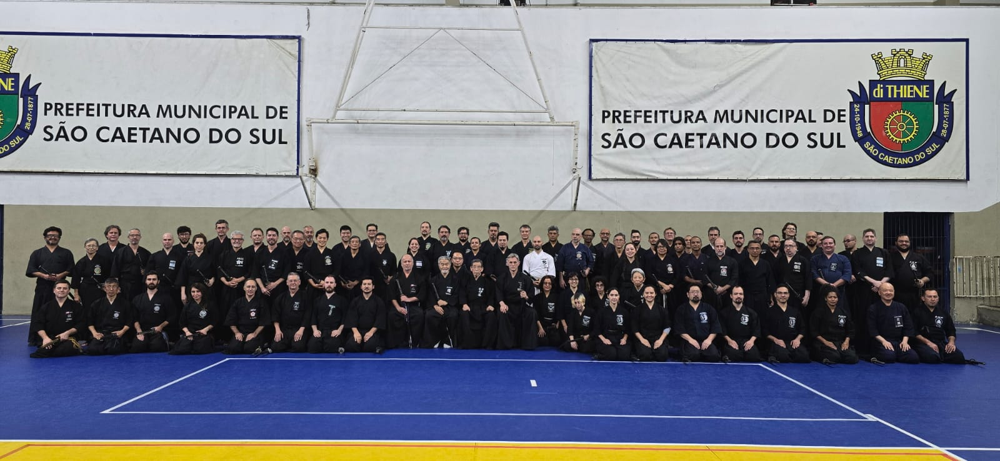

Notícias
Seminário, Exame de Graduação e 11º Campeonato Brasileiro de Iaido - São Paulo

Foto com todos os participantes do 10º Campeonato Brasileiro de Iaido.
06/06/2026
Nos dias 15 e 16 de agosto, em São Paulo, ocorrerá o Seminário, Exame de Graduação e 11º Campeonato Brasileiro de Iaido, com apoio da Confederação Brasileira de Kendo (CBK). As inscrições deverão ser realizadas até dia 03 de julho de 2026. Estão programados no dia 15 o Seminário, que será realizado no Shizuoka Kenjikai (Rua Vergueiro, 193 - Liberdade, São Paulo - SP, 01504-001) e no dia 16 o Exame de Graduação e o Campeonato que ocorrerá no COTP - Centro Olímpico de Treinamento e Pesquisa Marechal Mário Ary Pires (Av. Ibirapuera, 1315 - Vila Clementino, São Paulo - SP, 04029- 000).